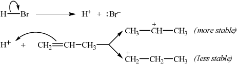
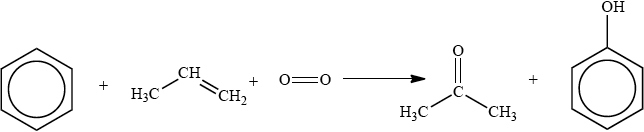

SL Paper 3
Alkenes can undergo electrophilic addition reactions with bromine and with hydrogen bromide.
Name the product formed when but-2-ene reacts with
Explain how a bromine molecule is able to act as an electrophile.
(i) bromine.
(ii) hydrogen bromide.
When but-1-ene reacts with hydrogen bromide, two possible organic products could be formed but in practice only one organic product is obtained in high yield. Explain the mechanism for this reaction using curly arrows to represent the movement of electron pairs and explain clearly why only one organic product is formed.
Markscheme
as the bromine approaches the alkene an induced dipole is formed / OWTTE;
(i) 2,3-dibromobutane;
(ii) 2-bromobutane;

showing curly arrow from double bond to H (in H–Br) and curly arrow from bond in H–Br to Br;
showing the curly arrow from the lone pair/negative charge on Br– to the secondary carbocation and 2-bromobutane as correct product;
stating that the secondary carbocation will be formed in preference to the primary carbocation;
the two positive/electron releasing inductive effects due to the two R– groups on the secondary carbocation make it more stable;
Examiners report
In part (a) candidates rarely explained the induced dipole in the bromine molecule which allows it to act as an electrophile.
Part (b) was answered more effectively with many candidates correctly naming products formed from but-2-ene, although several candidates omitted ‘di’ from 2,3-dibromobutane and thus lost the mark.
The poor use of curly arrows was again evident in part (c) although some candidates clearly explained why only one organic product is formed when but-1-ene reacts with hydrogen bromide.
Deduce a two-step reaction pathway which can be used to convert 1-bromopropane into butanoic acid. Draw the structural formula of the organic product formed for each step and identify the reagents involved.
Deduce a two-step reaction pathway which can be used to convert propan-2-ol into 1,2-dibromopropane. Draw the structural formula of the organic product formed for each step and identify the reagents involved.
Markscheme
(addition of) Mg/magnesium;
\({\text{C}}{{\text{H}}_3}{\text{C}}{{\text{H}}_2}{\text{C}}{{\text{H}}_2}{\text{MgBr}}\);
(addition of) \({\text{C}}{{\text{O}}_2}\) /carbon dioxide and \({{\text{H}}_2}{\text{O}}\)/water;
\({\text{C}}{{\text{H}}_3}{\text{C}}{{\text{H}}_2}{\text{C}}{{\text{H}}_2}{\text{C}}{{\text{O}}_2}{\text{H}}\) / \({\text{C}}{{\text{H}}_3}{\text{C}}{{\text{H}}_2}{\text{C}}{{\text{H}}_2}{\text{COOH}}\);
concentrated phosphoric acid/\({{\text{H}}_3}{\text{P}}{{\text{O}}_4}\)/sulfuric acid/\({{\text{H}}_2}{\text{S}}{{\text{O}}_4}\);
\({\text{(C}}{{\text{H}}_{\text{3}}}{\text{)CH=C}}{{\text{H}}_{\text{2}}}\);
\({\text{B}}{{\text{r}}_2}\)/bromine;
\({\text{BrC}}{{\text{H}}_2}{\text{CHBrC}}{{\text{H}}_3}\);
Examiners report
About half of the candidates struggled with part (a), with only the best candidates scoring the marks, which demonstrated that the candidates found reaction pathways difficult.
Part (b) was answered better than part (a), but quite a few candidates did not state concentrated.
Addition of hydrogen halides to unsymmetrical alkenes produces a mixture of halogenoalkanes. The latter can be converted into Grignard reagents by reaction with magnesium metal and then used for the preparation of various organic molecules with an increased number of carbon atoms.
Describe, using equations and curly arrows to represent the movement of electron pairs, the mechanism of the reaction between propene and hydrogen bromide. Compare the relative stabilities of the two intermediate carbocations which lead to the formation of the major and minor products.
Markscheme

curly arrow showing movement of electron pair from the double bond to hydrogen in HBr;
formation of \({\text{B}}{{\text{r}}^ - }\);
OR

equation for HBr dissociation;
curly arrow showing movement of electron pair from the double bond to \({{\text{H}}^ + }\);

correct structures of both carbocations;
curly arrow showing either C–Br bond formation / mechanism for either product;
Award [3 max] for mechanism.
\({{\text{(C}}{{\text{H}}_3}{\text{)}}_2}{\text{C}}{{\text{H}}^ + }\) is more stable / \({\text{C}}{{\text{H}}_3}{\text{C}}{{\text{H}}_2}{\text{CH}}_2^ + \) is less stable;
Examiners report
A few candidates appeared to have encountered the reactions forming Grignard reagents, but hardly any could give the correct formulas of the products of their reactions.
Draw the structural formula of the major organic products, A and B, formed in the following reactions.
\({\text{C}}{{\text{H}}_3}{\text{C}}{{\text{H}}_2}{\text{CH=C}}{{\text{H}}_2} + {\text{HBr}} \to \) A
A:
Markscheme
A: \({\text{C}}{{\text{H}}_3}{\text{C}}{{\text{H}}_2}{\text{CH(C}}{{\text{H}}_3}{\text{)Br}}\);
Examiners report
Most candidates gave the correct structure in (a).
The cumene process is used for the production of both propanone and phenol. The overall reaction is shown in the equation below.

This process is important in the polymer industry. Propanone can be converted into methyl methacrylate, the monomer used to make Perspex®, and phenol is used in phenol-methanal resins, which are important thermosetting plastics.
State and explain how the presence of a halogen substituent might affect the acidity of carboxylic acids.
Propanone could also be formed from propene by reaction with steam over an acidic catalyst, followed by oxidation of the product.
The reaction of propene with water can yield two possible products. Explain, in terms of the stability of the intermediate carbocations, why one is formed in much greater quantities than the other.
Markscheme
halogens make them more acidic;
halogens are electron withdrawing;
Accept halogens (can be) electronegative.
reduces charge on/stabilizes anion formed / weakens O–H bond / makes it easier to lose \({{\text{H}}^ + }\) ion;
Accept decreases pKa.
Accept causes anion to be weaker base.
one product involves a primary carbocation and other a secondary carbocation;
secondary carbocation is more stable (than the primary carbocation, and hence this produces the major product);
alkyl groups reduce charge on carbon atom (through an inductive effect);
Positive inductive effect of alkyl groups alone not enough for M3.
Examiners report
(a) (i) was well done by the better candidates only, but most candidates only scored one mark in (ii) and no marks in (iii).
(d) was very poorly answered. Some knew that there was an inductive effect but did not understand what this meant, namely that through the positive inductive effect the alkyl groups reduce the charge on the carbon atom.